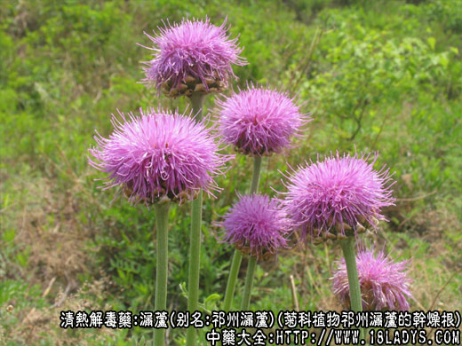
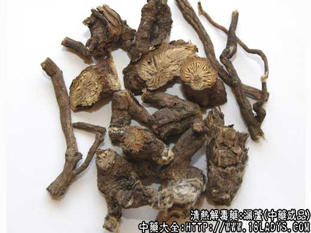
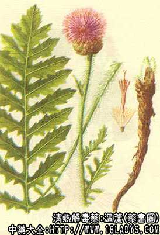

漏芦为较常用中药。《神农本草经》列为上品。商品主要有祁州漏芦和禹州漏芦两种。前者北方惯用，后者南方习销。
1、祁州漏芦
别名：独华山牛蒡（西北）、大脑袋花（辽宁）。
来源：为菊科植物祁州漏芦的干燥根，野生。
植物形态：多年生宿根草本，高25～60厘米，茎直立多单一，不分枝。全株披白色柔毛，根较粗大，外皮暗棕色具菱形裂隙。茎叶较大，有长柄，叶片羽状深裂至全裂，小叶片披针形浅裂。茎生叶互生近无柄，亦作羽状浅裂。头状花序顶生，单一。花淡红紫色，直径5～6.5厘米。总苞广钟形。瘦果倒卵形光滑，顶端有宿存冠毛。
产地：主产于河北、山西、辽宁等省。华北、东北、西北多有分布。
性状鉴别：根圆锥形或裂块状，顶端有披毛茸的叶柄残基和茎基。形体扭曲，外表棕黑色，粗糙，表皮易脱落，具有明显的纵沟及菱形网状裂纹。质轻，糟朽状，易折断，木部与皮部易分离，木部黄色，放射状排列，裂隙明显，中心多空，中部裂隙处深棕色，微有香气，味微苦。
以根条粗长，整齐，不破碎，表皮棕黑色者为佳。
主要成分：含挥发油。
药理作用：为通乳剂，清热解毒，消痈肿。在体外对多种皮肤真菌有轻度的抑制作用。
炮制：切片，生用。
性味：苦寒。
归经：入胃经。
功能：清热解毒，消肿，排脓，生肌，下乳。
主治：痈疽发背，疔疮肿毒，瘰疠，乳疮，乳汁不通。
临床应用：1、用于治急性乳房炎，症见乳汁不通、乳房红肿热痛，常配清热散结之剂，方如乳房痈汤。还用于治淋巴结炎、痔疮。可内服或外用，外用研末加蜂蜜调敷患处。
2、用于湿疹疮疡经久不愈，配黄芪、银花等，方如漏芦解毒汤。
使用注意：孕妇慎用。
用量：3～12g。
处方举例：1、乳痛方：漏芦9g、忍冬花12g、山慈姑9g、北芪12g、川木瓜9g、川芎4.5g、生姜9g、大枣15g，水煎服。
2、禹州漏芦
别名：华州漏芦，球花漏芦。
来源：为菊科多年生草本植物蓝刺头及其同属植物的干燥根，野生。
产地：主产于安徽、湖北、河南等省。华东、中南地区多有分布。
性状鉴别：根圆柱形，稍扭曲，长10～30厘米，直径0.5～1.5厘米。下部渐细，表面土棕色，具纵皱纹。根头稍膨大显横纹，顶端带有棕丝状纤维毛（残存叶柄维管束），质稍坚硬，断面纤维性。有灰黑色与黄白色条纹间隔排列成呈放射状纹理。气微，味微涩。
效用：同上。
注：1、除以上两种漏芦外，河南部分地区以菊科植物罗罗葱的根作漏芦用。山西晋南，闻喜临汾等地以菊科植物鸦葱（雅葱）的根作漏芦用。甘肃、陕西部分地区以毛茛科大火草或野棉花的根作漏芦用。疗效是否相同还有待研究。
2、祁州漏芦：因顶端带有白毛茸，常与白头翁相混应注意区分。
3、毛茛科植物牛扁的根形色略与祁州漏芦相似，唯顶端不具白色毛茸，味苦辛，有大毒。应注意区分。